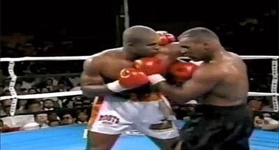
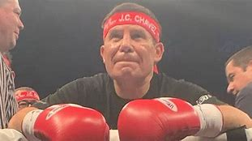

Myke Tyson dominó este deporte desde mitad de la década de los 80 hasta
principios de los 2000. Gracias a sus 50 victorias, de las cuáles 44 fueron
con nocaut, Tyson está considerado como uno de los boxeadores famosos actuales.
Su increíble potencia en el ring fue manchada, en algunas ocasiones, por una vida
social con auténticos escándalos. Además de su maestría en este deporte, a Myke siempre
le recordaremos por arrancar de un mordisco la oreja de su oponente.

Muhammed Ali
Muhammad Ali es uno de los boxeadores más famosos de la historia de este deporte. Desde
1960 hasta 1981, Ali llegó a conseguir un total de 56 victorias, siendo 37 de ellas por
nocaut, y medalla de oro en las Olimpiadas de Roma de 1960.
Su particular estilo en el ring llamaba la atención a profesionales y amantes de este deporte
de contacto. Durante años dominó a la perfección su categoría de peso pesado, derrotando incluso
a leyendas como Sonny Liston, George Foreman y Joe Frazier.
Oscar de la Hoya
Es un boxeador de origen mexicano que nació en Estados Unidos y fue campeón en seis categorías
distintas.Además, este deportista se alzó con títulos tan relevantes como la medalla de oro en
los Juegos Olímpicos de Barcelona y el Campeón Liviano Junior de la OMB en dos ocasiones.
Julio Cesar Chavez
Un verdadero fenómeno del boxeo. Realizó 37 peleas por campeonatos del mundo, un hecho sin
precedentes en la historia universal del boxeo. Fue campeón de tres categorías: Super Pluma,
Liviano y Welter. Realizó 115 peleas y recién perdió el invicto en la número 91 ante el "Cirujano"
Randall. Poseía un estilo agresivo, muchísimo coraje y un enorme poder de asimilación, pues
en la mayoría de los combates propuso y obtuvo cambios de golpes permanentes. Chávez fue el campeón
que más riesgos tomó en cada una de sus peleas.

Floyd Mayweather
Floyd fue un enorme campeón y le tocó una época de fácil accesibilidad ante unos rivales claramente
inferiores. A diferencia de otros campeones mundiales, a los retadores de Floyd había que buscarlos
y ofrecerles mucho dinero, pues él resultaba ser el contratante de sus rivales en su doble condición
de campeón y promotor. Se trató de un defensivo casi inpenetrable que dosificó sus contraataques tomando
el menor riesgo posible.
Este boxeador ha conseguido batir todos los récords y alzarse con títulos a nivel mundial de 5 categorías
diferentes: superpluma, ligero, superligero, welter y superwelter.
Dentro del ring cuenta con uno de los grandes récords de 50 victorias, 27 de ellas por nocaut,
y 0 derrotas.